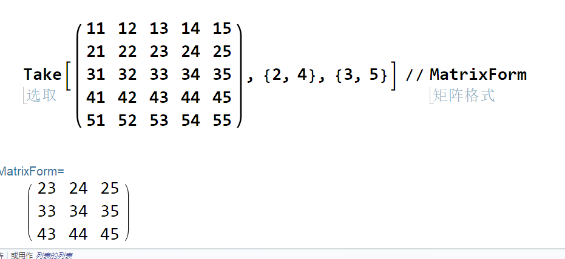

1.1介绍
在Mathematica中，列表是主要的数据结构，在LISP等函数式编程语言中也是如此。任何复杂的数据结构都可以表示为一些(可能是复杂的和嵌套的)列表。例如，n维数组表示为深度为n的列表。
列表可以在程序执行过程中动态生成，正确编写的函数可以处理任意长度的列表，而不需要将列表的长度作为显式参数。这将生成相当“干净”的代码，同时也很容易编写。列表的另一个优点是通常很容易调试在其上工作的函数—我们将看到许多此类特性的示例。在本章中，我们将介绍几个用于生成和处理列表的内置函数。
1.2在Mathematica中处理列表的主要法则
当我们在Mathematica中处理列表时，特别是处理大型列表时，坚持以下主要规则：
我们必须将任何列表视为单个单元，并避免将其分解为多个单元的操作，例如数组索引。换句话说，最好的编程风格是尝试编写这样的程序，使操作作为一个整体应用于列表。这种方法在函数式编程风格中尤其重要，并可显著提高代码效率。我们将通过许多例子来说明这个问题。
1.3 列表的内容
列表不需要只包含相同类型的元素——它们放入以任意方式混合的任何Mathematica表达式。这些表达式本身可以是列表或更通用的Mathematica表达式，可以有任何大小和深度。本质上，列表是一个通用Mathematica表达式的特殊情况，它的特征是有一个头列表:
Clear[x];
List[Sin[x],Cos[x]]
{Sin[x],Cos[x]}1.4产生列表
有许多方式可以产生列表。
1.4.1 手动产生列表
首先，当然可以手动生成一个列表。例如:
Clear[测试列表,a,b,c,d];
测试列表={a,b,c,d}
Clear[测试列表];
{a,b,c,d}1.4.2 通过Range命令生成等间距数的列表
在平时，经常需要生成等间距数的列表。在函数中尤其如此，因为这样，列表中的函数会替换循环。可以使用内置的Range命令生成这样的列表。例如：
Range[5]
Range[2,6]
Range[2,10,3]
Range[0,1,0.02]
{1,2,3,4,5}
{2,3,4,5,6}
{2,5,8}
{0., 0.2, 0.4, 0.6, 0.8, 1.}1.4.3用Table命令产生列表
当需要更一般的列表的情况下，通常可以通过Table命令生成它们。例如：
Table[1, {i, 1, 5}]
Table[i, {i, 1, 5}]
Table[i*j, {i, 1, 5}, {j, 1, 3}]
Table[i + j + k*m, {i, 1, 2}, {j, 1, 2}, {k, 1, 2}, {m, 1, 2}]
Table[Sin[i x], {i, 1, 5}]
{1, 1, 1, 1, 1}
{1, 2, 3, 4, 5}
{{1, 2, 3}, {2, 4, 6}, {3, 6, 9}, {4, 8, 12}, {5, 10, 15}}
{{{{3, 4}, {4, 6}}, {{4, 5}, {5, 7}}}, {{{4, 5}, {5, 7}}, {{5, 6}, {6, 8}}}}
{Sin[x], Sin[2 x], Sin[3 x], Sin[4 x], Sin[5 x]}如这些示例所示，Table接受一个或多个指示迭代界限的列表，但是我们可以使用迭代计数器上计算的一些函数来填充列表 。在有多个迭代器的情况下，我们创建一个嵌套的列表，其中最内层的迭代器对应于最外层的列表。正如我们所看到的，最外层迭代器的界限可能取决于最内层迭代器的变量，在这种情况下，列表将有不同长度的子列表。这就是我们开始看到列表比(多维)数组更一般的地方，因为子列表不一定具有相同的维度。另外，请注意，由表创建的列表不一定是数字列表—它们可以是函数列表 。
Clear[i,m];
Table[m^i,{i,1,5}]
{m,m^2,m^3,m^4,m^5}我们可以在这里创建一个3 * 3的单项式矩阵:
Clear[i,j,x];
Table[x^{i+j},{i,1,3,1},{j,1,3,1}]
{{{x^2},{x^3},{x^4}},{{x^3},{x^4},{x^5}},{{x^4},{x^5},{x^6}}}关于Table的另一个需要注意的是，它是一个局部结构，因为它本地化了迭代器变量。它在这样做的时候有效地使用了Block[]局部构造，以及所有通常伴随使用Block[]的结果。特别的，由于f的定义使用了全局的i，所以我们天真地期望在下面的示例中输出5次f[i]符号
Clear[f];
f:=i^2;
Table[f,{i,1,5,1}]
{1,4,9,16,25}可以看到输出的是{1,4,9,16,25},并不是{f[1],f[2],f[3],f[4],f[5]}
并且，我们在上面没有清除i，在下面我们再次输入i，发现i并没有被定义。
i
i关于Table的最后一个需要注意的是，虽然它是一个局部结构，但Return[]命令不能用来打破它，不像我们将遇到的其他作用域结构:
说明
就比如你在C里写一个函数里面for循环啥的，return直接就离开函数了，但是table就不一样，就把return当一个符号对象那样输出。
Table[If[i>3,Return[],i],{i,1,5}]
{1,2,3,Return[],Return[]}1.4.4 关于Range的进一步的讨论
(Range[3]*#)&/@Range[3]
Nest[Partition[#,3,1]&,Range[3,8],2]
Map[Sin, Range@5]
{{1,2,3},{2,4,6},{3,6,9}}
{{{3,4,5},{4,5,6},{5,6,7}},{{4,5,6},{5,6,7},{6,7,8}}}
{Sin[1],Sin[2],Sin[3],Sin[4],Sin[5]}上面的这些例子你可能看的不是很懂。
我们在这里给出它们只是为了说明仅使用Range命令有很多创造各种表作用。实际上，表可以被看作是一个优化的循环——使用表来创建列表通常(更)有效，而不是像do、For或While这样的循环。但是在函数式编程中，不像Range那样经常使用Table，现在你知道为什么我们喜欢用Range——因为我们总是可以得到相同的效果，而且通常更快。
1.4.5 在循环中生成列表
For[testlist={};i=1,i<=10,i++,testlist=Append[testlist,Sin[i]]];
testlist
{Sin[1],Sin[2],Sin[3],Sin[4],Sin[5],Sin[6],Sin[7],Sin[8],Sin[9],Sin[10]}注意
像do、For或While这样的循环在mma中是非常慢的，因此，最好别用！
1.4.6番外篇—— 一个判断执行时间是短时间的有用函数
在这里，我介绍一个自定义的实用函数myTiming （这个函数书中有些问题，目前我还未找到解决方法）
Clear[myTiming];
myTiming[x_]:=Module[{z=0,y=0,timelim=0.1,p,q,iterlist=(Power[10,#]&/@Range[0,10])
,nm=If[ToExpression[StringTake[$Version,1]]<6,2,1]},
Catch[If[(z=Nest[First,Timing[(y++;Do[x,{#}]);],nm])>timelim,Throw[{z,y}]]&/@iterlist]/.{p_,q_}:>p/iterlist[[q]]];
Attributes[myTiming]={HoldAll}现在解释这个代码有点复杂，但是在通读学习之后，重新阅读它你会看到很多东西，因为它阐明了许多要点。
1.4.7 低效率行为:用Append构造一个列表
让我们用AbsoluteTiming函数来比较这类列表生成和Range生成的耗时:
检查：
AbsoluteTiming[For[testlist={};i=1,i<1000,i++,testlist=Append[testlist,Sin[i]]];]
AbsoluteTiming[Sin@Range@1000]
0.0563442
0.000431963我们看到，在1000个第一自然数上构造Sin的(符号)值列表，使用Append比使用Range慢100倍。但事实是，计算复杂性是不同的，列表越大，使用Append产生的开销就越大。我们还可以看到Table将如何执行
AbsoluteTiming[Table[Sin@x,{x,1,1000}]]
0.000759985我们看到它比Range要慢一点
除了更慢之外，使用循环的生成还引入了一个全局副作用——变量<testlist>。因此，为了使代码更简洁，可以使用这种方法将循环包装在一个额外的模块化结构中，从而使其更加笨拙。
因此，最后，我将彻底劝阻你不要在循环中直接生成列表。
首先，几乎总是有更好的设计解决方案可以完全避免这个问题 。
其次，存在一些变通方法来获得线性时间性能，比如使用链表(将在下面讨论)或索引变量。最后，从mma5开始，有专门介绍的特殊命令Reap和Sow，用于高效地生成和收集计算中的中间结果。
1.5 内部(完整)的列表形式
让我再次强调，列表的内部形式满足了Mathematica中如何构建普通表达式的一般要求
Clear[testlist,complexlist];
testlist=Range@10;
complexlist=Range/@Range[5]
{{1},{1,2},{1,2,3},{1,2,3,4},{1,2,3,4,5}}FullForm@testlist
FullForm@complexlist
List[1,2,3,4,5,6,7,8,9,10]
List[List[1],List[1,2],List[1,2,3],List[1,2,3,4],List[1,2,3,4,5]]1.6 列表操作
1.6.1 使用Part命令进行列表索引和元素提取
1.6.1.1 简单列表
Clear[testlist];
testlist=Range[1,10,3]
{1,4,7,10}假如 我们需要提取它的第3个元素。具体做法如下:
testlist[[3]]
Part[testlist]
7
7现在，假设我们需要提取第一，第二和第四元素。这就是
testlist[[{1,2,4}]]
Part[testlist,{1,2,4}]
{1,4,10}
{1,4,10}当然你如果要提取最后一个元素可以用[[-1]]意思就是倒数第一个
testlist[[-1]]
101.6.1.2 使用嵌套列表
Clear[complexlist];
complexlist=Range[5*#,5*#+1]&/@Range[5]
{{5,6},{10,11},{15,16},{20,21},{25,26}}它的第一元素是它的子列表
complexlist[[1]]
{5,6}complexlist[[2,1]]
10这意味着“第 二个元素的第一个元素”(我们可以将此列表视为一个二维数组)。
注意，complextestlist[[{1,1}]]语法将被解释为原列表中第一个元素重复两次，即第一个子列表重复两次:
complexlist[[{1,1}]]
complexlist[[{1, 3}]]
{{5,6},{5,6}}
{{5,6},{15,16}}1.6.2 Extract(提取)操作
这个运算符类似于部分运算符，它有一些额外的功能，这些功能有时非常有用，但目前我们对它们不感兴趣。现在重要的是，它可以同时提取不同级别的几个元素(Part也可以提取几个元素，但是它们必须在同一级别)。而且，Extract有不同的语法——要在比第一个层次更深的层次上提取元素(而且，每次提取多个元素时)，应该将提取的元素的地址作为索引列表输入
Clear[list,complexlist];
list=Range[2,7,2]
complexlist=Range[5*#,5*#+1]&/@Range[5]
Extract[list,2]
Extract[complexlist,1]
Extract[complexlist,{1,2}]
{2,4,6}
{{5,6},{10,11},{15,16},{20,21},{25,26}}
4
{5,6}
6比如我们要提取complex列表的第一个元素，第一个元素的第二个，以及第二个元素的第一个。
Extract[complexlist,{{1},{1,2},{2,1}}]
{{5,6},6,10}1.6.3 Take和Drop操作
这些命令用于从列表中取出或删除一行中的几个元素。
Take语法：
Take[list,{n}]给出list的第n个元素
Take[list，n] 给出 list 的前 n 个元素.
Take[list,-n] 给出 list 的后 n 个元素.
Take[list,{m,n,s}] 从 m 到 n 的元素，步长 s ，不给参数s，默认是1.
更多的见帮助
Clear[list];
list = {1, 3, 7, 10, 8}
Take[list,{3}]
Take[list,{1,2}]
Take[list,{1,5,2}]
{1,3,7,10,8}
{7}
{1,3}
{1,7,8}Drop是和Take完全相反的操作，Drop是从列表中删除元素。
Clear[list];
list = {1, 3, 7, 10, 8}
Drop[list,{3}]
Drop[list,{1,2}]
Drop[list,{1,5,2}]
{1, 3, 7, 10, 8}
{1, 3, 10, 8}
{7, 10, 8}
{3,10}Take和Drop都具有一些扩展功能，可自动执行对嵌套列表执行的结构操作，例如从矩阵中提取子矩阵。
Take[list,seq1,seq2} 实际上从 list 中提取一个子矩阵.
比如我们想提取下列矩阵中的第2行到第4行，第3列到第5列

更多的查看帮助文档。
1.6.4 First, Rest, Last and Most
这些命令在原则上是多余的.
First [list]完全等同于list [[1]]
Rest [list]等同于Drop [list，1]
Last [list]等同于list [[-1]]
Most [list]等效于Drop [list，-1]。
但是，可以使用它们来提高代码的可读性。
1.6.5 Length
这个命令给出列表的长度 。
List[expression]给出expression的长度
注意
注意这里是给出expression（表达式）的长度，不仅仅是列表
Clear[list, complexlist];
list = Range[2, 10, 2]
complexlist = Range[5 #, 5 # + 2] & /@ Range[4]
Length[list]
complexlist // Length
{2,4,6,8,10}
{{5,6,7},{10,11,12},{15,16,17},{20,21,22}}
5
4假如我们想要complexlist中子列表的长度
Table[Length[complexlist[[i]]], {i, 1, Length[complexlist]}]
{3, 3, 3, 3}这里的索引i用于索引子列表，因此它从1到主列表的长度，而Part操作[[i]]提取子列表
1.6.6 使用Part 直接索引修改列表元素
1.6.6.1 Part的简单修改
如果想使用一些新的表达式或值（例如，符号）用已知地址替换列表中的某些元素，则可以直接执行此操作。
假设我们现在要用将地址为{5}的元素替换为 a
Clear[list,complexlist];
list=Range[2,10,2]
list[[5]]=a
list
{2, 4, 6, 8, 10}
a
{2,4,6,8,a}现在，让我们现在在列表中将每个子列表中的元素随机替换为 a
Clear[list, complexlist];
complexlist = Range[5 #, 5 # + 4] & /@ Range[5]
For[i = 1, i <= Length[complexlist], i++,
complexlist[[i, Random[Integer, {1, 5}]]] = a];
complexlist
{{5,6,7,8,9},{10,11,12,13,14},{15,16,17,18,19},{20,21,22,23,24},{25,26,27,28,29}}
{{5,a,7,8,9},{10,11,12,a,14},{15,16,17,a,19},{20,21,a,23,24},{25,26,27,a,29}}注意
在以上所有示例中，都使用Part命令（[[]]）进行表达式的修改。还请注意，使用Part进行列表修改会带来副作用，因为修改后的列表不是最开始我们定义的列表
1.6.6.2 高效率地用Part修改大列表
我还要在这里提及的另一件事是，Part具有非常强大的扩展功能，该功能允许同时更改许多元素。例如，如果我想将的每个子列表的第二个元素分别变成 b,c,d,e,f则可以通过以下方式进行
Clear[complexlist];
complexlist = Range[5 #, 5 # + 4] & /@ Range@5;
Part[complexlist, All, 2] = {b, c, d, e, f};
complexlist
{{5, b, 7, 8, 9}, {10, c, 12, 13, 14}, {15, d, 17, 18, 19}, {20, e,
22, 23, 24}, {25, f, 27, 28, 29}}在必须立即更改许多元素的情况下，这非常方便。但是，这仅限于这些部分形成一些规则的结构（如子矩阵等）的情况。有关更多详细信息，请参见《 Mathematica帮助》
1.6.7 ReplacePart
另一个用于修改列表元素的内置命令——ReplacePart。
注意
由于我们用Part的操作，原始列表被修改了。然而，在Mathematica程序中，我们经常会修改一个列表，它不是原始列表，而是一个副本，这样原始列表就不会改变。这种编程风格可以说更简洁，但由于复制了原始对象，因此需要更多内存。大多数内置函数都以这种方式工作。特别是ReplacePart:
Clear[list];
list = Range[1, 20, 4];
ReplacePart[list, a, 5]
list
{1, 5, 9, 13, a}
{1, 5, 9, 13, 17}从上面我们可以看到list这个列表并没有被修改，还是原来的list。Replace的好处就在这个地方！
让我们再看一个：
ReplacePart[Range@10, a, 5]
{1, 2, 3, 4, a, 6, 7, 8, 9, 10}在这种情况下没有错误-因为它没有试图改变原始列表，而是只是改变了它的副本。
ReplacePart还一次更改多个元素，也可以更改不同级别的表达式中的元素。例如:
ReplacePart[Range@10, a, {{1}, {3}, {8}}](*分别用a替换第1，3，8个地方的元素*)
{a, 2, a, 4, 5, 6, 7, a, 9, 10}注意
关于位置列表的语法与Extract命令相同（Extract也可以提取不同级别的元素）。ReplacePart在帮助文档中有详细的描述
需要提醒的是
如果想要同时更改一个大型表达式的许多部分，那么ReplacePart可能会变得非常慢！
举个例子说明
ReplacePart[Range[15000], 0, List /@ Range[1, 15000, 2]]; // AbsoluteTiming
ReplacePart[Range[15000], a, List /@ Range[1, 15000, 2]]; // AbsoluteTiming
{0.00105426, Null}
{0.747227, Null}可以看到这个例子中我们把0换成了a速度降低了700多倍！
1.6.8 Position
Position命令用于确定列表(或更通用的Mathematica表达式)中与给定表达式完全匹配或通过模式匹配的元素的位置
1.6.8.1Position 的基本用法
在最简单的形式中，Position的格式如下:Position[list,element]。
Clear[complexlist, list];
list = Range[1, 20, 3];
complexlist = Range[5 #, 5 # + 4] & /@ Range@5;
Position[#1, #2] & @@@ {{list, 4}, {complexlist, 12}}
{{{2}}, {{2, 3}}}Positon命令可以与Extract命令一起使用，因为它们使用相同的位置规范:
Position[complexlist,12]]
{12}1.6.8.2 其他函数和Position的结合使用
首先看一个简单的例子
Position[complexlist, 10]
Map[Most, Position[complexlist, 10]]
{{2, 1}}
{{2}}上面这个看起来没什么大不了的，不就是提取了包含10的整个子列表的位置，然后删除最后一个元素的位置
Map的功能将在稍后讨论。如果位置列表中包含多个位置，则最后一个索引将从所有位置中删除。
我们在这里可以定义另一个嵌套列表，其中一些数字被多次找到 ：
Clear[complexlist1,plist]
complexlist1 = Range /@ Range[6]
plist=Position[complexlist1, 4]
{{1}, {1, 2}, {1, 2, 3}, {1, 2, 3, 4}, {1, 2, 3, 4, 5}, {1, 2, 3, 4, 5, 6}}
{{4, 4}, {5, 4}, {6, 4}}从上面的代码中，我们可以看到4这个元素出现过很多次。
如果我们用Extract函数使用这些位置，我们就得到4，提取3次
Extract[complexlist1, plist]
{4, 4, 4}紧接着 ，如果我们想要提取包含4的所有子列表，我们还需要一个步骤。为了只获取子列表的位置，我们必须删除plist中每个子列表的最后一个索引:
mlist = Most /@ plist
Extract[complexlist1, mlist]
{{4}, {5}, {6}}
{{1, 2, 3, 4}, {1, 2, 3, 4, 5}, {1, 2, 3, 4, 5, 6}}1.6.8.3 一个例子:提取包含给定元素的子列表
Clear[sublistsWithElement];
sublistWithElement[main_List, elem_] :=
Extract[main, Map[Most, Position[main, elem]]];
sublistWithElement[complexlist1, 5]
{{1, 2, 3, 4, 5}, {1, 2, 3, 4, 5, 6}}我利用这个机会来说明Mathematica中用户定义函数的几个常见特性。
首先，函数的开发:通常最好从一些简单的测试示例开始，按照上面的步骤开发代码，然后将所有内容打包成一个函数。
其次，我们看到l.h.s.（left hand side )(左边）函数定义中的参数包含一个下划线。这是在定义中使用模式的标志。现在，我将简要地提一下这个模式，比如x_表示“任何表达式”，并自动使<x>在r.h.s （right hand side)(右边 ) 本地。上面main_List 代表头部是List的main。
如果在定义中使用了SetDelayed(:=)，则在函数中使用了SetDelayed(:=)。模式x_h表示“头部<h>的任何内容”。
因此，上面的模式<main_List>将匹配列表，但不匹配头部不是列表的表达式。这构成了一个简单的类型检查。
注意
关于位置函数的另一个注释在这里:重要的是要记住，这是一个优化的、快速的内置函数，它也是一个通用函数。特别的,如果你有一个列表排序对某些标准,它将通常更快大列表来查找一个元素的一个版本一个二进制搜索,你可以实现在数学(对数复杂性)比位置函数(一个线性复杂度)。
1.6.8.4 复杂的例子：带有奇数元素的子列表
现在，我们将在一个稍微不那么简单的示例中使用模式来演示Position的用法。请忽略你还不熟悉的语法片段，请将注意力集中在概念部分，并将其视为一个示例。问题：从complextestlist1这个列表中提取所有包含奇数个奇数元素的子列表（说的有点绕，意思就是找到所有的这样的子列表：这个子列表中包含奇数元素，并且奇数元素的个数是奇数）。我们的解决方案将分步骤进行。
Clear[complexlist1];
complexlist1 = Range /@ Range[6]
{{1}, {1, 2}, {1, 2, 3}, {1, 2, 3, 4}, {1, 2, 3, 4, 5}, {1,
2, 3, 4, 5, 6}}构建解决方案
找到所有奇数的所有位置
step1list = Position[complexlist1, _?OddQ]
{{1, 1}, {2, 1}, {3, 1}, {3, 3}, {4, 1}, {4, 3}, {5, 1}, {5,
3}, {5, 5}, {6, 1}, {6, 3}, {6, 5}}在每个子列表中，第一个索引给出了compextestlist1中的子列表的数量，第二个索引给出了这个子列表中给定奇数元素的索引
我们将子列表的地址相同的组合在一起让它们具有相同的第一个元素:
step2list = Split[step1list, First[#1] == First[#2] &]
{{{1, 1}}, {{2, 1}}, {{3, 1}, {3, 3}}, {{4, 1}, {4,
3}}, {{5, 1}, {5, 3}, {5, 5}}, {{6, 1}, {6, 3}, {6, 5}}}Split是另一个内置命令，我们稍后将介绍它，其目的是将一个列表拆分为“相同”元素的子列表，用户可以在其中定义“相同”的概念。特别地，在这种情况下，我们告诉Split，如果索引的子列表具有相同的第一个元素，则将它们视为“相同的”。注意，现在它们被合并到额外的列表中
这样就把所有奇数所在的地址都找出来了！
只保留列表中的第一个元素
step3list = Map[First, step2list, {2}]
{{1}, {2}, {3, 3}, {4, 4}, {5, 5, 5}, {6, 6, 6}}紧接着。我们只保留子列表长度为奇数的地址
step4list = Cases[step3list, x_List /; OddQ[Length[x]]]
{{1}, {2}, {5, 5, 5}, {6, 6, 6}}Cases是用于查找某个表达式或模式在较大表达式中出现的所有列表的命令。我们稍后会讲到。
于是现在我们就找到了，符合条件的（奇数个奇数元素的子列表）子列表的地址
将所有子列表替换为它们的第一个元素
step5list = Union[Flatten[step4list]]
{1, 2, 5, 6}Flatten使任何列表都是平面的，Union删除重复的元素并对结果列表进行排序。
提取子列表
complexlist1[[step5list]]
{{1}, {1, 2}, {1, 2, 3, 4, 5}, {1, 2, 3, 4, 5, 6}}将代码组装成函数
Clear[oddSublists];
oddSublists[x_List] :=
Part[x, Union[
Flatten[Cases[
Map[First, Split[Position[x, _?OddQ], First[#1] == First[#2] &
], {2}], y_List /; OddQ[Length[y]]]]]];
oddSublists[complexlist1]
{{1}, {1, 2}, {1, 2, 3, 4, 5}, {1, 2, 3, 4, 5, 6}}另一个方法组装成函数
Clear[sublistOdd];
sublistOdd[x_List] :=
Map[If[EvenQ[Count[#, _?OddQ]], # /. # -> Sequence[], #] &, x];
sublistOdd[complexlist1]
{{1}, {1, 2}, {1, 2, 3, 4, 5}, {1, 2, 3, 4, 5, 6}}虽然第一个实现变得非常复杂，与基于嵌套循环的传统过程式编程相比，质疑这种编程风格的优势，但我在这里的主要目标是演示位置命令的使用，并可能介绍其他一些方法
然而，第二种认识显然更简短。这种程序可以写得很快，而且通常很短
还有一种做法是使用循环做，但是早就已经说明了，mma中尽量不要使用for，do，while等循环语句，因为这样会非常非常慢！
1.7 从列表中添加元素或从列表中删除元素
1.7.1Append, Prepend, AppendTo and PrependTo
Clear[a];
testlist = Range[5]
{1, 2, 3, 4, 5}
Append[testlist, a]
{1, 2, 3, 4, 5, a}
Prepend[testlist, a]
{a, 1, 2, 3, 4, 5}
testlist
{1, 2, 3, 4, 5}最后一个结果表明列表testlist并没有发生改变。没有副作用在Mathematica的内置函数中是特有的。在这里，Append和Prepend作用于列表testlist的复制品并修改这个复制品。如果我们要修改原来的列表，我们还可以这样写：
testlist = Append[testlist, a];
testlist
{1, 2, 3, 4, 5, a}或者用函数AppendTo
testlist = Range[5]
{1, 2, 3, 4, 5}
AppendTo[testlist, a];
testlist
{1, 2, 3, 4, 5, a}Prepend和PrependTo是完全类似的。同时，我们会怀疑AppendTo或者PrependTo作用在一个列表上，作用方式不是被分配给任何变量（不是一种左值（L-value）），是一个错误。
Append[Range[5], a]
{1, 2, 3, 4, 5, a}
AppendTo[Range[5], a]
（*Set::write: Range[5] 中的标签 Range 被保护. >>*）
{1, 2, 3, 4, 5, a}我们已经说过了，最好避免使用这些函数（Append等等）来修改大型列表。随后我们会考虑几个更有效方法。
1.7.2 Insert和Delete
从它们的名字看就再明显不过了，这两函数用来在一个列表里插入和删除一个元素，或者是在更一般的Mathematica表达式里作用。它们的操作详见Mathematica帮助文档。
Insert的格式是Insert[list,new,pos]它会将新元素nes插到列表list的位置pos上。
Delete的格式是Delete[list,pos]，它把列表list位置pos上的元素删除。
Clear[a];
testlist = Range[3, 15, 2]
{3, 5, 7, 9, 11, 13, 15}
Delete[testlist, 4]
{3, 5, 7, 11, 13, 15}
Insert[testlist, a, 5]
{3, 5, 7, 9, a, 11, 13, 15}再次看到，这两函数作用在列表的复制品上，所以原来的列表没有改变！
testlist
{3, 5, 7, 9, 11, 13, 15}同时，这两函数可以作用在嵌套列表里（或者更一般的Mathematica表示式），并且位置将是一个索引列表。而且，它们会接受一些位置组成的列表而不仅仅只是一个位置——在这中情况里，一个元素会马上被插入（删除）到许多位置。
然而，对于Insert，同时插入大量元素时它会变得非常缓慢。
1.8关于嵌套列表
经常会涉及到处理嵌套列表，嵌套列表就是元素是列表的一种列表。我们曾经见过一些嵌套列表。让我强调一下，嵌套列表和多维数组不是完全相同的，实际上它更一般，因为每一层子列表的长度可以不同。关于一般的嵌套列表，我们唯一可以说的是它代表Tree(树)。
1.8.1Partition(分割)
该函数用来把列表切割成一个个子列表（可以是重叠）。最简单的形式是Partition[list,size,shift]。生成偏移量为 shift 的子列表.。它把列表切成长度为size的子列表，然后依据shift（ 偏移量.）来移动到下一个子列表。如果参数shift没有给出，那么列表将会被切割成没有重叠的子列表。看一下面一些例子
1.8.1.1一个简单的例子
testlist = Table[Sqrt[i], {i, 1, 10}]
{1, Sqrt[2], Sqrt[3], 2, Sqrt[5], Sqrt[6], Sqrt[7],
2 Sqrt[2], 3, Sqrt[10]}
Partition[testlist, 3]
{{1, Sqrt[2], Sqrt[3]}, {2, Sqrt[5], Sqrt[6]}, {Sqrt[7], 2 Sqrt[2], 3}}
Partition[testlist, 7]
{{1, Sqrt[2], Sqrt[3], 2, Sqrt[5], Sqrt[6], Sqrt[7]}}在最后的例子中，剩下的部分少于7个，所以剩下的部分就被没了。
现在我们来看看有重叠部分的例子：
Partition[testlist, 7, 1]
{{1, Sqrt[2], Sqrt[3], 2, Sqrt[5], Sqrt[6], Sqrt[7]}, {Sqrt[2], Sqrt[
3], 2, Sqrt[5], Sqrt[6], Sqrt[7], 2 Sqrt[2]}, {Sqrt[3], 2, Sqrt[5],
Sqrt[6], Sqrt[7], 2 Sqrt[2], 3}, {2, Sqrt[5], Sqrt[6], Sqrt[7],
2 Sqrt[2], 3, Sqrt[10]}}这个的意思就是生成所有偏移量为1的子列表
由 Partition[list,n,1] 生成的所有 list 元素都显示在子列表中
说到这里似乎还很模糊，我们继续看一个例子
Partition[testlist, 7, 2]
{{1, Sqrt[2], Sqrt[3], 2, Sqrt[5], Sqrt[6], Sqrt[7]}, {Sqrt[3], 2,
Sqrt[5], Sqrt[6], Sqrt[7], 2 Sqrt[2], 3}}本来testlist是{1, Sqrt[2], Sqrt[3], 2, Sqrt[5], Sqrt[6], Sqrt[7], 2 Sqrt[2], 3, Sqrt[10]}，然后Partition[testlist, 7, 2]的意思是把列表分成7个元素个元素组成的新列表，后面的那个2的意思是，原来的列表的第一个元素往后数两个，从第3个开始，取七个元素。
1.8.1.2 实际运用的例子：列表的moving average的计算
这个例子是基于在Wagner'96里的一个问题：
一个列表的moving average是这样的平均值：
一个列表中的一个元素，考虑个相邻的元素，它和相邻元素的平均值，这个平均值是在点（元素）上定义的，这个点（元素）至少有m个左邻右舍。因此，moving average实际上是一些平均值组成的列表，长度为len - 2m ，而len是原来列表的长度。
解决方案
我们首先定义一个辅助的函数，这个函数计算一个列表的平均值。然而，它说明我们的函数也可以作用在一个数字列表上。这次把列表里所有的元素求和（包括具有相同个数的元素）。
Clear[listAverage];
listAverage[x_List] := Apply[Plus, x]/Length[x];
Clear[neighborLists];
neighborLists[x_List, m_Integer] := Partition[x, Length[x] - 2*m, 1];
neighborLists[testlist, 1]
{{1, Sqrt[2], Sqrt[3], 2, Sqrt[5], Sqrt[6], Sqrt[7],
2 Sqrt[2]}, {Sqrt[2], Sqrt[3], 2, Sqrt[5], Sqrt[6], Sqrt[7],
2 Sqrt[2], 3}, {Sqrt[3], 2, Sqrt[5], Sqrt[6], Sqrt[7], 2 Sqrt[2], 3,
Sqrt[10]}}表达式Apply[Plus,x]计算列表里的每一个元素的和，它的意思会在第五章介绍。
step2
现在我们意识到中间的那个列表代表"middle points"的列表，第一个列表和最后一个列表就是这些"middle points"的最近的邻居。因此，剩下唯一要做的是使用我们自定义的函数listAverage作用在其结果上：
listAverage[neighborLists[testlist, 1]]
{1/3 (1 + Sqrt[2] + Sqrt[3]), 1/3 (2 + Sqrt[2] + Sqrt[3]),
1/3 (2 + Sqrt[3] + Sqrt[5]), 1/3 (2 + Sqrt[5] + Sqrt[6]),
1/3 (Sqrt[5] + Sqrt[6] + Sqrt[7]),
1/3 (2 Sqrt[2] + Sqrt[6] + Sqrt[7]), 1/3 (3 + 2 Sqrt[2] + Sqrt[7]),
1/3 (3 + 2 Sqrt[2] + Sqrt[10])}我们把他们打包成函数。
Clear[movingAverage, neighborLists, listAverage];
neighborLists[x_List, m_Integer] := Partition[x, Length[x] - 2*m, 1];
listAverage[x_List] := Apply[Plus, x]/Length[x];
movingAverage[x_List, m_Integer] := listAverage[neighborLists[x, m]];我们来计算两边各有2个元素的的moving average：
movingAverage[testlist, 2]
{1/5 (3 + Sqrt[2] + Sqrt[3] + Sqrt[5]),
1/5 (2 + Sqrt[2] + Sqrt[3] + Sqrt[5] + Sqrt[6]),
1/5 (2 + Sqrt[3] + Sqrt[5] + Sqrt[6] + Sqrt[7]),
1/5 (2 + 2 Sqrt[2] + Sqrt[5] + Sqrt[6] + Sqrt[7]),
1/5 (3 + 2 Sqrt[2] + Sqrt[5] + Sqrt[6] + Sqrt[7]),
1/5 (3 + 2 Sqrt[2] + Sqrt[6] + Sqrt[7] + Sqrt[10])}1.8.2 Transpose（转置）
这是最有用的内置函数之一。它的名字来源于代表2维列表的列表——矩阵，它执行调换操作（transposition operation）（说白了就是转置）。然而，我们并不总是一定要把2维数组翻译成列表，特别如果该数组里的元素是不同类型的。这也表明了Transpose可以完成大量的任务。让我们先从数字列表开始，我们现在有一个已知的以列表作为元素的列表（它们可以是列表本身，但是这不影响我们）：
1.8.2.1一个简单的例子：矩阵的转置
Clear[testlist];
testlist = Table[{i, j}, {i, 1, 2}, {j, 1, 2}]
Transpose@testlist
{{{1, 1}, {1, 2}}, {{2, 1}, {2, 2}}}
{{{1, 1}, {2, 1}}, {{1, 2}, {2, 2}}}1.8.2.2 做一个学生分数表
Clear[名字, 分数];
名字 = {"张三", "李四", "王五", "张麻子"};
分数 = {"60", "80", "75", "90"};
Transpose[{名字, 分数}]
{{"张三", "60"}, {"李四", "80"}, {"王五", "75"}, {"张麻子", "90"}}当我们学习函数式编程的时候，我们会从转置中学到最多的信息，因为转置经常被用于高效的结构重组。
1.8.3 Flaten（压平）
此命令用于破坏嵌套列表的结构，因为它删除了所有内部花括号，并将任何复杂的嵌套列表转换为平面列表。
说明
就像我们开始所说的那样，我们是不建议使用这个的，因为破坏了原始结构！
1.8.3.1 一个简单的例子：压平列表
Clear[list];
list = {Range[#] & /@ Range@4}
list // Flatten
{{{1}, {1, 2}, {1, 2, 3}, {1, 2, 3, 4}}}
{1, 1, 2, 1, 2, 3, 1, 2, 3, 4}1.8.3.2 压平一个给定的深度
我们可以令Flatten更有选择性地通过命令它去破坏表达式的某个层。被破坏的层可以在Flatten的可选择的第二个参数中给出。
Clear[teselist];
teselist = Table[{i, j}, {i, 1, 2}, {j, 1, 3}];
Flatten[testlist, 1]
{{1, 1}, {1, 2}, {1, 3}, {2, 1}, {2, 2}, {2, 3}}一层层地压平一个嵌套列表
testlist = Table[{i, j, k}, {i, 1, 2}, {j, 1, 2}, {k, 1, 3}]
{{{{1, 1, 1}, {1, 1, 2}, {1, 1, 3}}, {{1, 2, 1}, {1, 2, 2}, {1, 2,
3}}}, {{{2, 1, 1}, {2, 1, 2}, {2, 1, 3}}, {{2, 2, 1}, {2, 2,
2}, {2, 2, 3}}}}
Flatten[testlist, 1]
{{{1, 1, 1}, {1, 1, 2}, {1, 1, 3}}, {{1, 2, 1}, {1, 2, 2}, {1, 2,
3}}, {{2, 1, 1}, {2, 1, 2}, {2, 1, 3}}, {{2, 2, 1}, {2, 2, 2}, {2,
2, 3}}}
Flatten[testlist, 2]
{{1, 1, 1}, {1, 1, 2}, {1, 1, 3}, {1, 2, 1}, {1, 2, 2}, {1, 2, 3}, {2,
1, 1}, {2, 1, 2}, {2, 1, 3}, {2, 2, 1}, {2, 2, 2}, {2, 2, 3}}
Flatten[testlist, 3]
{1, 1, 1, 1, 1, 2, 1, 1, 3, 1, 2, 1, 1, 2, 2, 1, 2, 3, 2, 1, 1, 2, 1, \
2, 2, 1, 3, 2, 2, 1, 2, 2, 2, 2, 2, 3}1.8.3.3 一个小应用：用Flatten产生列表
我们之前说过在循环中直接生成列表可能是效率很低的方法。
可以使用Flatten来加速这个过程。例如，我们希望生成一个从1到10的列表，当然，这是最容易做到的，只需使用Range[10])。我们可以这样做:
我们生成一个嵌套列表（这种列表在Mathematica中也叫做linked lists）
For[testlist = {}; i = 1, i <= 10, i++, testlist = {testlist, i}];
testlist
{{{{{{{{{{{}, 1}, 2}, 3}, 4}, 5}, 6}, 7}, 8}, 9}, 10}我们使用Flatten
Flatten[testlist]
{1, 2, 3, 4, 5, 6, 7, 8, 9, 10}让我们来用之前使用Append的方式来对比一下运行时间.
For[testlist = {}; i = 1, i < 5000, i++,
AppendTo[testlist, i]]; // Timing
{0.093601, Null}现在是我们的新方法：
(For[testlist = {}; i = 1, i <= 10, i++, testlist = {testlist, i}];
Flatten[testlist];) // Timing
{0., Null}我们看到差距至少就在于命令的长度。即使这个方法本身并不是最有效率的，但是我们将会看到嵌套列表是怎样被用来巧妙性性地在某些问题中提高效率。
1.9 列表间的集合运算
经常会用到两个或两个以上列表的并集，交集和补集，也经常要去掉列表中的重复的元素。
这些可以用内置函数Join，Intersection，Complement和Union来完成。
1.9.1 Join（连接）
函数Join把两个或两个以上的列表连接起来。
格式是Join[list1,[Ellipsis],listn]，是列表，不要求具有相同的深度和结构。
如果列表包含相同的元素，这些相同的元素并不会被删除，也就是列表被连接起来，而在它们的内部结构中没有更多的修改。
Clear[a, b, c, d, e, f];
Join[{a, b, c}, {d, e, f}]
{a, b, c, d, e, f}
Join[{{a, b}, {c, d}}, {e, f}]
{{a, b}, {c, d}, e, f}Join从左往右把列表连接在一起，没有对列表进行任何排序和变换。
1.9.2 Intersection（交集）
函数Intersection找到两个或两个以上列表的共同元素，也就是说它将得到属于所有列表的所有元素。
格式是：Intersection[list1,...,listn]。
Clear[a, b, c, d, e, f];
Intersection[{a, b, c}, {b, c, d, e}]
{b, c}
Intersection[{a, b, c, d, e, f}, {a, b, c}, {c, d, e}]
{c}
Intersection[{a, b, c}, {d, e, f}]
{}在最后的例子中我们得到一个空列表，因为两个列表的交集是空集
函数Intersection有一个选项SameTest，这个选项可以用来提供一个定制的"sameness"函数,即我们可以定义"same"的规则，与默认情况下是不同的。请看函数Union关于这个选项运用的例子。同时，有了这个选项，Intersection会变得很慢，比它单纯的形式更慢。
1.9.3 Complement（补集）
函数Complement[listAll,list1,...,istn]给出其他列表的并集在列表中的补足元素。换句话说，它返回在列表中的而不再任何一个列表的元素。而且Complement还对结果排序。
Complement[{a, b, c, d, e, f}, {b, c, e}]
{a, d, f}
Complement[{a, b, c, d, e, f}, {b, c, e}, {d, e, f}]
{a}
Complement[{a, b, c, d, e, f}, {b, c, e}, {d, e, f}, {a, b, c}]
{}函数Complement，就像Intersection一样也有选项SameTest。它允许我们定义关于"same"的观念。所有的我对Intersection关于这个选项的注解，将在这本书里应用
1.10与列表排序有关的函数
这里我们讨论和列表排序有关的有用的内置函数。
函数Sort对列表进行排序。
函数Union去除列表中的重复元素并且对结果排序。
函数Split将列表分割为由相同的靠近的元素构成的子列表。
对这三个函数都可以定义"sameness"的概念，而与默认的定义不同。下面，我们给出更多的细节和每个函数用法的例子。
1.10.1 Sort（排序）命令
1.10.1.1基本用法
这个函数用来对列表进行排序
Clear[a, b, c, d, e, f, g, t];
Sort[{a, d, e, b, g, t, f, d, a, b, f, c}]
{a, a, b, b, c, d, d, e, f, f, g, t}
Sort[{5, 7, 2, 4, 3, 1}]
{1, 2, 3, 4, 5, 7}函数Sort可以对任意Mathematica表达式进行排序。默认情况下，Sort是依照词典编撰对符号进行排序，按数字的升序进行或者依照列表的第一个元素。总之，这就是Mathematica中的标准排序顺序，查询Mathematica帮助文档可以得到更多信息。
我们对一个嵌套正数列表进行排序
nested = Table[
Random[Integer, {1, 15}], {5}, {Random[Integer, {3, 10}]}]
{{10, 3, 11, 6, 11, 11, 1, 4, 4, 13}, {8, 12, 7, 10, 8, 12, 11,
7}, {6, 5, 3, 15}, {5, 7, 1, 11, 9, 7}, {14, 12, 3, 8, 5, 7, 12}}
Sort[nested]
{{6, 5, 3, 15}, {5, 7, 1, 11, 9, 7}, {14, 12, 3, 8, 5, 7, 12}, {8, 12,
7, 10, 8, 12, 11, 7}, {10, 3, 11, 6, 11, 11, 1, 4, 4, 13}}我们可以看到排序是在按照子列表的第一个元素进行的。
1.10.1.2自定义排序方式
作为一个选项的第二个参数，Sort接受一个对比函数来替代默认函数。
我们可以按照从大到小排序一个列表
Sort[{5, 7, 2, 4, 3, 1}, Greater]
{7, 5, 4, 3, 2, 1}我们还可以根据子列表的长度对嵌套列表进行排序。
任何可以返回True或者False的带有两个变量的函数都可以称为排序函数。这是假定了给出True或者False依赖于那一个元素更"大"。
我必须说明人们使用Sort，定义了排序函数，会使得程序变慢。
Clear[sortFunction,nested];
nested = Table[
Random[Integer, {1, 15}], {5}, {Random[Integer, {3, 10}]}]
{{10, 3, 11, 6, 11, 11, 1, 4, 4, 13}, {8, 12, 7, 10, 8, 12, 11,
7}, {6, 5, 3, 15}, {5, 7, 1, 11, 9, 7}, {14, 12, 3, 8, 5, 7, 12}}
sortFunction[x_List, y_List] := Length[x] < Length[y];
Sort[nested, sortFunction]
{{10, 9, 4, 10, 8, 1, 15}, {14, 6, 14, 5, 4, 15, 7, 6, 10}, {5, 10,
7}, {14, 3, 9, 13, 1, 13, 8, 7, 1}, {1, 11, 8, 8}}
{{10, 3, 11, 6, 11, 11, 1, 4, 4, 13}, {8, 12, 7, 10, 8, 12, 11,
7}, {6, 5, 3, 15}, {5, 7, 1, 11, 9, 7}, {14, 12, 3, 8, 5, 7, 12}}
{{5, 10, 7}, {1, 11, 8, 8}, {10, 9, 4, 10, 8, 1, 15}, {14, 3, 9, 13,
1, 13, 8, 7, 1}, {14, 6, 14, 5, 4, 15, 7, 6, 10}}1.10.1.3 Ordering
该函数给出列表中元素按Sort顺序排列的位置。它里头也可以有用户定义的"纯"形式定义对比函数。它给出的信息比仅仅只有Sort的情况下更多，特别是结合Orderding和Part来排序列表。
listtosort = {a, d, e, b, g, t, f, d, a, b, f, c}
{a, d, e, b, g, t, f, d, a, b, f, c}
Ordering[listtosort]
{1, 9, 4, 10, 12, 2, 8, 3, 7, 11, 5, 6}
listtosort[[Ordering[listtosort]]]
{a, a, b, b, c, d, d, e, f, f, g, t}Ordering是一个很有用的函数，正是因为它给出的信息比仅仅只有Sort的情况下更多，而且和Sort本身具有一样的效率。
1.10.2Union命令
1.10.2.1基本用法
在它的基本形式里，Union把列表看成一个单独的变量，在一个列表里返回已排序的唯一的元素。排序过程是在Mathematica默认排序函数下进行的（按照词典编撰顺序对符号表达式排序，对数字进行升序排列，依照列表的第一个元素等等）
Union[{a, d, e, b, g, t, f, d, a, b, f, c}]
{a, b, c, d, e, f, g, t}
testlist = Table[Random[Integer, {1, 10}], {15}]
{7, 3, 9, 6, 7, 5, 2, 7, 10, 9, 4, 1, 4, 9, 7}
Union[testlist]
{1, 2, 3, 4, 5, 6, 7, 9, 10}Union对结果进行排序这一事实，本质上是和Union内部算法有关系的。如果元素没有被排序，人们可以写出一个传统的union函数，这个函数将会比内置函数Union慢。
1.10.2.2 带有SameTest选项的Union
Union[testlist, SameTest -> (Mod[#1 - #2, 3] == 0 &)]
{1, 2, 3}带有SameTest选项的Union函数会变得很慢，比不带选项的Union慢的多.
1.10.3 Split命令
该函数用来把列表切成几个子列表，以致于每个子列表的元素是相同的。它也可以接受"sameness"函数作为第二个可选的参数。它从头到尾查看列表，并比较相邻的元素，使用默认"sameness"函数（SameQ）或者是我们自己给出的"sameness"函数。每当相邻的两个元素不是一样的，它就把已经是相同的元素放进一个列表里，然后再重新开始另一个子列表。
1.10.3.1基础用法
在基本形式中，Split把列表切成子列表，当只有一个参数时，使用SameQ来断定元素的比较。这里我们引入一个列表和它的排序结果
testlist = Table[Random[Integer, {1, 15}], {20}]
sorted = Sort[testlist]
Split[testlist]
Split[sorted]
{8, 11, 6, 15, 7, 2, 9, 13, 3, 15, 13, 6, 1, 11, 15, 14, 12, 3, 5, 8}
{1, 2, 3, 3, 5, 6, 6, 7, 8, 8, 9, 11, 11, 12, 13, 13, 14, 15, 15, 15}
{{8}, {11}, {6}, {15}, {7}, {2}, {9}, {13}, {3}, {15}, {13}, {6},
{1}, {11}, {15}, {14}, {12}, {3}, {5}, {8}}
{{1}, {2}, {3, 3}, {5}, {6, 6}, {7}, {8, 8}, {9}, {11, 11}, {12}, {13,
13}, {14}, {15, 15, 15}}1.10.3.2 自定义sameness的Split函数
我们现在可以定义两个元素的sameness，如果它们除以3有相同的余数就称他们相同.在使用Split把相同的元素放在一起之前，我们将会用不同的排序函数来排序列表。当相邻的两个数除以3有相同的余数时，就把它们放在一个已经排好序的列表里：
Clear[testlist];
testlist = Table[Random[Integer, {1, 15}], {20}];
mod3sorted = Sort[testlist, Mod[#1, 3] < Mod[#2, 3] &]
Split[mod3sorted, Mod[#1, 3] == Mod[#2, 3] &]
{15, 12, 6, 12, 9, 9, 12, 15, 7, 10, 10, 4, 7, 10, 5, 11, \
5, 14, 2, 8}
{{15, 12, 6, 12, 9, 9, 12, 15}, {7, 10, 10, 4, 7, 10}, {5,
11, 5, 14, 2, 8}}Split是一个很有用的函数。因为它对列表执行一个简单的扫视，而且只是比较相邻的元素，具有线性的复杂性。再者，因为比较的次数等于列表的长度减一，和用户定义的sameness函数（在函数Sort和Union那里曾经讨论过的）联系在一起时，它并不会碰到严重的性能上的障碍。
1.10.3.3一个小例子：计算相同元素的频率
Clear[testlist, runEncodeSplit, runEncode, frequencies];
testlist = Table[Random[Integer, {1, 15}], {20}]
runEncodeSplit[spl_List] :=
Table[{spl[[i, 1]], Length[spl[[i]]]}, {i, Length[spl]}];
runEncode[x_List] := runEncodeSplit[Split[x]];
frequencies[x_List] := runEncode[Sort[x]];
frequencies[testlist]
{10, 14, 8, 15, 3, 11, 15, 7, 2, 14, 2, 10, 11, 8, 9, 4, \
11, 3, 11, 9}
{{2, 2}, {3, 2}, {4, 1}, {7, 1}, {8, 2}, {9, 2}, {10,
2}, {11, 4}, {14, 2}, {15, 2}}总结：
本章我们介绍了列表，在Mathematica中数据结构最重要的一部分。我们考虑了几种列表操作比如生成列表。
元素的取出，添加，替换和删除，在列表中定位具有某种特性的元素，还有几种特别的函数：在一个或集合列表上进行快速的结构性操作。还有一些关于排序列表的函数。
我们讨论了以下函数
产生列表的函数：Range,Table
列表操作函数： Extract, Take, Drop, First, Rest, Most, Last, Position, Length
添加元素的函数：Append, Prepend, AppendTo, PrependTo
嵌套列表函数：Partition, Transpose, Flatten
列表的集合运算：Join, Intersection，Complement
列表排序函数：Sort,Union,Split
有了这些函数武装起来的我们，已经对解决各种各样的问题有了很大的帮助。然而，我们还需要另一个主要的组成部分，对Mathematica函数的理解：它们是什么？怎么定义它们？等等！这是下一章的主题。